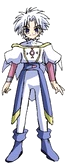
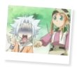

|
 |
I N F O R M A T I O N » Q U O T E S
In the anime, Mannen says some pretty funny things, being one of the comic reliefs of the show. Below are a couple of my favorite quotes containing Mannen, I hope you enjoy them as much as I did.
Episode 3
Mannen: Got it! *snatches ice cream away from Himeno* You were no match for me!
Himeno: My green tea-kimchi!
Mannen: Thanks for the free snack! *bits into ice cream* Mmmm! *face turns red* *face turns blue* *falls over face purple*
Himeno: *snickers* Perhaps my Green tea-kimchi is too much for you. *grabs ice cream back* You're still a kid...
Mannen: You don't have a sense of taste, neechan.

Episode 4
Mannen: You guys didn't just ditch Himeno, did you? *Shin's banana falls to the ground*
Shin: *face crumbles and starts wailing
Mannen: You idiot! If you cry like that, someone will come!
Maid: What's the matter with you boys?
Mannen: *stiffens and freezes up*
Maid: Ah...did you drop your banana? Here, I'll give you a cookie to replace it. You're whose kids...?
Shin: We're-
Mannen: *shoves his banana in Shin's mouth and edges him away from the maid*
Episode 5
Mannen: So what do we do about Himeno-neechan and Hayate?
Kei: They're fine, leave them be.
Mannen: Fine, my butt!
Kei: Then what do you intend to do? It's not as though they'd listen to us.
Mannen: If you don't try, you'll never know!
Kei: This is why I hate children.
Mannen: *twitch* Who's a child?
Kei: At any rate, let's wait and see. We'll take action later. This conversation is over, go home.
Mannen: *waves hand on top of Kei's tea cup casually* Man, you're cold! Are you sure you're really not the Ice Knight?
Kei: *picks up cup to drink but stops short* That Mannen...it's frozen solid.

Episode 6
Mannen: *crashes into Himeno on the street* Ow...oh! Found ya neechan! Where were you?? We were looking all-
Himeno: *grabs Mannen by the shoulders* Perfect timing!
Mannen: huh...? *sitting by the pond* About Saihi?
Himeno: Yes. Stuff you know. It can be anything, tell me!
Mannen: You say "anything," but...The stuff I know is just boring stuff, really.
Himeno: It doesn't matter if it's boring!
Hajime: Mannen-nii doesn't know anything.
Mannen: *twitches* Shove it! Don't you be blabbing unecessary stuff!
Hajime: Well Mannen-nii and all of us were born after Saihi was sealed - that's what I heard.
Himeno: So that's how it is.
Mannen: (to Hajime) You blabbermouth...
Shin: Hey, why don't we go to Saihi's sealing grounds?
Mannen: *turns blue and blinks* You dumbass, Shin! If we do that, we'll get beat up by Goh and the others for sure!
Himeno: Hey... the "sealing grounds," where is it?
Hajime: It's in...
Shin: Leafunia.
Mannen: *rubs head in frustration* Ahh..you blabbermouths...
ainoyumeNET 2002 Trinity. All rights reserved. 
|
INFORMATION
/basics
/personality
/thoughts
/partners
/power
/voice
/quotations
|
MEDIA
/anime
/manga
/wallpapers
|
SITE RELATED
/updates
/links out
/link Ice Brat!
/credits
/contact me
|